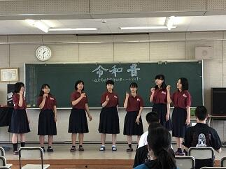
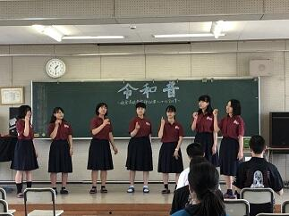

文字
背景
行間


カテゴリ:文化祭
鍋山祭第２日（一般公開N0.5）

 体育館では、吹奏楽部が演奏パフォーマスを披露してくれました。吹奏楽部は、いつも学校行事を支えてくれて盛り上げてくれています。この時期は鍋山祭のでのパフォーマスだけでなく野球応援の練習なども行ってくれています。体育館での演奏は超満員で大盛況でした。
体育館では、吹奏楽部が演奏パフォーマスを披露してくれました。吹奏楽部は、いつも学校行事を支えてくれて盛り上げてくれています。この時期は鍋山祭のでのパフォーマスだけでなく野球応援の練習なども行ってくれています。体育館での演奏は超満員で大盛況でした。 鍋山祭第２日（一般公開N0.4書道パフォーマンス）


 書道部による書道パフォーマンスが中庭で行われました。雨がポツリポツリとしていましたが、多くのギャラリーが見つめるなか素晴らしいパフォーマンスを披露してくれました。
書道部による書道パフォーマンスが中庭で行われました。雨がポツリポツリとしていましたが、多くのギャラリーが見つめるなか素晴らしいパフォーマンスを披露してくれました。 鍋山祭第２日（一般公開日No.3）
 鍋山祭第２日目では、PTAバザーが催されていて、地域交流施設の他に受付付近でも出店していて佐倉高校応援Tシャツや応援タオル、ガリ版アート作家、西岡としこ様による記念館デザインのトートバック、１２０周年記念和菓子など佐倉高校１２０周年を盛り上げるためにPTA役員の方々が企画製作された記念グッズが販売されていました。
鍋山祭第２日目では、PTAバザーが催されていて、地域交流施設の他に受付付近でも出店していて佐倉高校応援Tシャツや応援タオル、ガリ版アート作家、西岡としこ様による記念館デザインのトートバック、１２０周年記念和菓子など佐倉高校１２０周年を盛り上げるためにPTA役員の方々が企画製作された記念グッズが販売されていました。 鍋山祭第２日（一般公開No.2）

生徒もご来場された多くのお客さまも皆さん大変嬉しそうな様子でとてもよかったです。
茶道部のお茶会には堀田家第１３代当主堀田正典様にもご参加いただき楽しんでいただきました。
鍋山祭第２日（一般公開日N0.1千客万来）

 今日の一般公開日はあいにくの曇り空ですが、例年にも増して多くのお客様にご来場いただいています。会場はすごい熱気です。
今日の一般公開日はあいにくの曇り空ですが、例年にも増して多くのお客様にご来場いただいています。会場はすごい熱気です。 鍋山祭第１日（校内発表N0.5）


 今日の15:00ごろから佐倉市近辺は、一時的でしたが大雨洪水警報が出るほどの突然の豪雨でした。その影響もあり書道部は明日の書道パフォーマンスの練習を体育館のピロティで行っていました。他の団体も明日の一般公開に向けてお客様を迎える準備に余念がありません。明日は一日中天気がもってくれることを願います。
今日の15:00ごろから佐倉市近辺は、一時的でしたが大雨洪水警報が出るほどの突然の豪雨でした。その影響もあり書道部は明日の書道パフォーマンスの練習を体育館のピロティで行っていました。他の団体も明日の一般公開に向けてお客様を迎える準備に余念がありません。明日は一日中天気がもってくれることを願います。本校に明日ご来校予定の皆さまどうぞお気をつけてお越しください。心よりお待ちしています。
一般公開は６月２２日（土）9:00 ～14：30です。
鍋山祭第１日（校内発表No.4）

 本日の締めくくりは中夜祭です。ダンスやバンドのパフォーマンスで熱気がすごい。その中でパフォーマーも、もちろんすごいけど機材トラブルなど臨機応変に対応をして場をコントロールしている司会者は本当にすばらしかったです。
本日の締めくくりは中夜祭です。ダンスやバンドのパフォーマンスで熱気がすごい。その中でパフォーマーも、もちろんすごいけど機材トラブルなど臨機応変に対応をして場をコントロールしている司会者は本当にすばらしかったです。 鍋山祭第１日（校内発表No.3）


 
 書道部の作品展は気持ちのこもった力強い作品が多かったです。音楽部は、少人数ながらパートの持ち味を生かした構成やアレンジですばらしいハーモニーを奏でていました。美術部は生徒が製作した缶バッチの販売行っています。
書道部の作品展は気持ちのこもった力強い作品が多かったです。音楽部は、少人数ながらパートの持ち味を生かした構成やアレンジですばらしいハーモニーを奏でていました。美術部は生徒が製作した缶バッチの販売行っています。 鍋山祭第１日（校内発表No.2）


 お昼時は、何といってもレストラン・食料販売系のだしものですかね。どこも味には自信があるようですよ。お客様の笑顔がその証拠かな。
お昼時は、何といってもレストラン・食料販売系のだしものですかね。どこも味には自信があるようですよ。お客様の笑顔がその証拠かな。 鍋山祭第１日（校内発表N0.1）


 今日（校内発表）、明日（一般公開）と本校の文化祭である鍋山祭が行われています。
今日（校内発表）、明日（一般公開）と本校の文化祭である鍋山祭が行われています。本日は、まずオープニングセレモニーが行われました。はじめに各参加団体が制作した宣伝用CM動画が上映されました。どの団体の作品をとっても構成、表現力や技法に優れていることに加えてウィットに富んだ完成度の高いすばらしい作品ばかりでした。センスの良さに驚きです。宣伝CM大賞も表彰部門として作っていいのではと思いました。続く吹奏楽部は演奏パフォーマンスで一気に場を盛り上げてくれました。その後、生徒の佐久間君を中心に篠原先生、久貝先生を加えた三人組ダンスユニットのパフォーマンスが行われて、その切れのあるダンスはすばらしかったです。そして、音楽の授業選択者による「ハレルヤ」の大合唱は圧巻でした。女声、男声パートのそれぞれの響きが演奏に深みを与えていました。このオープニングセレモニー終了直後には、「ちょっとまったコール」後の伝統？のラグビー部のパフォーマンスで大いに盛り上がっていました。
オープニングセレモニーが終了して校内発表が始まりました。工芸部では、生徒や先生の作品の展示と販売を行っていて陶器や染め物の作品がところせましと並べられています。写真部では生徒や先生の作品の他、作品を使ったオリジナルカレンダーや栞が展示販売されています。華道部では生け花の個人や合同での作品の展示がされています。また、２Eの「おいでませ」は販売団体ですが、記念館や庭園風景を直径１０ｍｍくらいのカラーラベルを使って点描した作品は大作で見ものです。文芸部では生徒作家の感性豊かな作品を多数掲載している「芸術文学第六十號」を販売してます。
第45回鍋山祭 書道パフォーマンス


 本日11:00に行われた書道パフォーマンス。本校の中庭で多くのギャラリーの見守る中、書道部の書道ガールズが、気持ちを一つに、詩のことばに心をこめて一気に書き上げました。素晴らしいの一言です。
本日11:00に行われた書道パフォーマンス。本校の中庭で多くのギャラリーの見守る中、書道部の書道ガールズが、気持ちを一つに、詩のことばに心をこめて一気に書き上げました。素晴らしいの一言です。昨日、今日と連日PTAの広報委員会の皆様がこのパフォーマンスも含め鍋山祭を取材していただいています。本当にありがとうございます。PTA広報が楽しみです。
第45回鍋山祭 第2日

 本日は、鍋山祭の第2日目です。本日の発表は一般公開となっております。
本日は、鍋山祭の第2日目です。本日の発表は一般公開となっております。鍋山祭確認クイズ １．参加団体は、いくつでしょう。 ２．演劇鑑賞の整理券の配布場所・時間は。 ３．各調理等食品提供団体のメニューは。 ４．各部・同好会の特別企画の開始時間は。５．PTAバザーの場所は。
鍋山祭心に刻もうクイズ １．あなたのお気に入りの団体は。(投票がありますので、お願いします） ２．装飾が美しかった、工夫されてた団体は。３．鍋山祭一番の思い出は。
（右の写真は、私のお気に入りの工芸部の藍染ハンカチと美術部の缶バッチです。）
ご来場の際は、お気をつけてお越し下さい。お待ちしてます。
第45回鍋山祭 第１日

 いよいよ、文化委員会を中心に全生徒、職員で準備してきた今年度の鍋山祭が始まりました。各クラスや委員会、部活動・同好会の発表はどこも熱が入っていてすばらしいものとなっています。部活動展示のほんの一端をご紹介いたします。
いよいよ、文化委員会を中心に全生徒、職員で準備してきた今年度の鍋山祭が始まりました。各クラスや委員会、部活動・同好会の発表はどこも熱が入っていてすばらしいものとなっています。部活動展示のほんの一端をご紹介いたします。工芸部の藍染作品（手拭いやコースターなど）や陶芸作品の展示・販売、彫金や鋳造作品の展示、写真部の作品展示とカレンダー等の販売、華道部の生け花展示。なお、生け花の水盤は、工芸部の生徒の作品となっています。美術部では、作品展示と缶バッチの展示・販売をしています。ご来場の際は、ぜひともご覧いただき感想をいただけると幸いです。また、生物部では、佐倉高校の豊かな樹木に着目し来校者がそれらを鑑賞できるよう発表がされていました。
明日は、通常の会場での展示発表に加えて部活動毎に特別企画が目白押しです。
なお、ご来場者には、文化委員会で丹精を込めて作成した見やすい鍋山祭のパンフレットがありますので御見学の際の参考としていただけると幸いです。
The summer solstice 2018


今日は、二十四節気の第10番目の夏至です。佐倉市では、日の出の時間が4:24、日の入りが18:59です。佐倉市の緯度では昼の時間と夜の時間との比は、約1.6です。本日は、一年でもっとも日が長くなる日ですので佐倉高校にとって鍋山祭の準備日として最適な１日といえるのではないでしょうか。昨日の午後から校内は鍋山祭の会場へと装いを一変すべく槌音？が鳴り響いています。
生徒たちは、鍋山祭に向けて、熱い思いとともに多くの時間と労力をかけて準備してきましたが、いよいよその全貌を現す時が近づいてきました。６月23日（土）は、一般公開日ですのでお楽しみにしてください。
話は代わりますが、昨日は、第100回全国高等学校野球選手権記念東千葉・西千葉大会の試合の組み合わせ(千葉県高等学校野球連盟HPへ)が発表になりました。本校野球部は西千葉大会に出場します。本校の初戦は四街道北高校で、大会日程が順調に進めば、7月13日の青葉の森公園球場で行われる第１試合（試合開始は９時）となります。皆さんの熱い応援をよろしくお願いします。